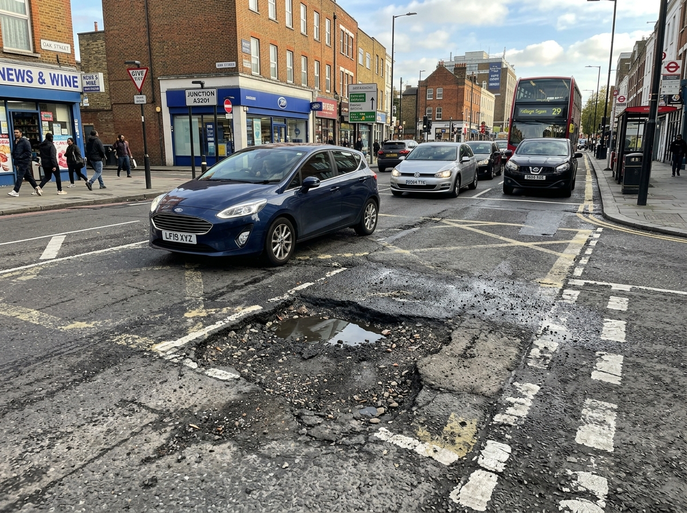
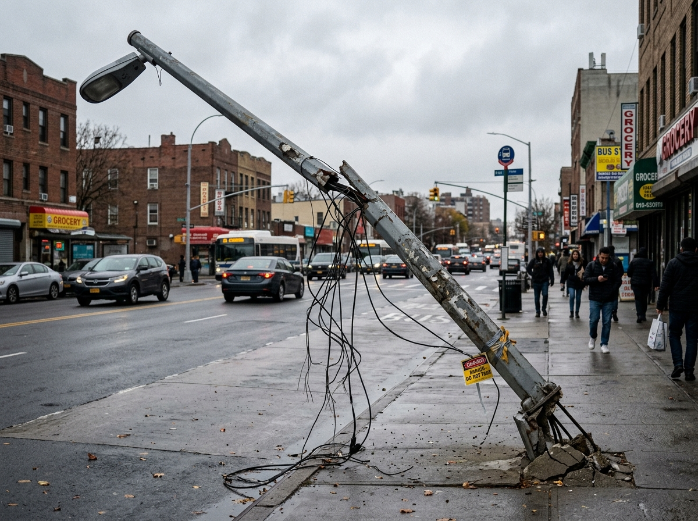
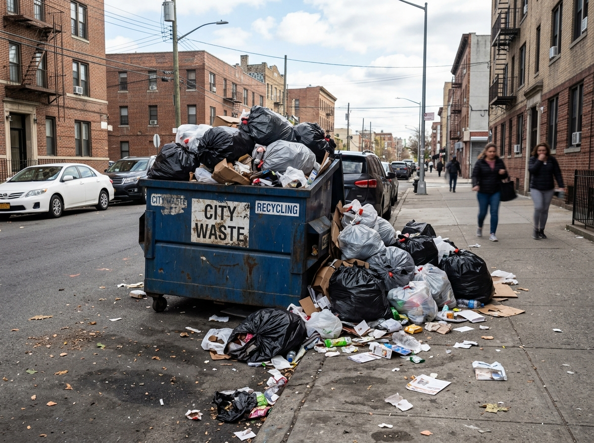

See it. Report it. Track it.
Report local civic problems quickly and keep track of their progress.

🕳️ PotholePothole near Main Junction
📍 Main Junction, Kochi
How It Works
Report civic problems in four straightforward steps.
Capture
Take a photo of the problem.
Locate
Add the problem location.
Report
Choose a category and submit.
Track
Follow the progress.
Recent Reports
Real-time civic updates from around Kochi.

CF10231
CF10198Report a Civic Problem
Submit details of infrastructure or sanitation issues directly to local municipal authorities.
Report Submitted Successfully!
Thank you for helping improve your community.
Resolution Timeline
Civic issue logged into CivicFix digital portal. Assigned unique ticket #CF10245.
Verified by Ward 12 Municipal Control Desk. Location and photo validated.
Repair crew dispatched: Ramesh Nair • KMC Road Maintenance Wing. Work Order #KMC-419.
Final asphalt compaction, site inspection, and citizen notification.
Report Details
Large pothole near the junction causing difficulty for vehicles.
About CivicFix
CivicFix makes it easier for citizens to report local civic problems.
The CivicFix Reporting Cycle
Snap live evidence
Detect Kochi GPS
Choose issue type
Submit in 30s
Follow resolution
Direct Municipal Accountability
Reports are routed straight to Kochi Municipal Corporation ward engineering and sanitation divisions, cutting bureaucratic delays.
Real-Time Public Tracking
Citizens receive clear, transparent status updates: Submitted → Under Review → In Progress → Resolved with assigned officer details.
Community-Driven Action
Prevents duplicate reporting with interactive neighborhood problem maps, enabling smarter resource allocation across wards.